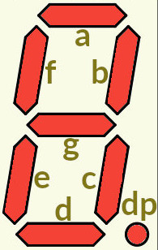
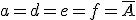
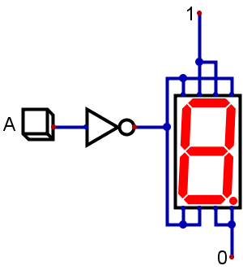

Decodificador
Un decodificador es un circuito digital que transforma N bits de entrada en una cantidad inferior o igual a 2N de salidas.
Vamos a ver un sencillo ejemplo, para que te resulte fácil comprenderlo.
Decodificador de 1 bit a 7 segmentos
Este circuito puede parecerte muy "tonto", pero valdrá para que comprendas la función de un decodificador.
Se trata de convertir el contenido de 1 bit (0 ó 1, no más) en su correspondiente representación en un display de 7 segmentos.
Para construir este circuito, diseñamos primero la tabla de verdad. Y, para ello, recordamos del tema de analógica cómo se nombran los segmentos de un display. Puedes verlo en la imagen.
Un "1" nos indicará el correspondiente segmento encendido y un "0" nos indicará que está apagado.
Así, la tabla de verdad nos quedará realmente fácil:
| A | a | b | c | d | e | f | g |
| 0 | 1 | 1 | 1 | 1 | 1 | 1 | 0 |
| 1 | 0 | 1 | 1 | 0 | 0 | 0 | 0 |
Con esto, las expresiones de los estados de los segmentos nos quedan así:
|  |
| b = c = 1 |
| g = 0 |
Finalmente, la implementación del circuito queda como sigue:

Puedes descargar el circuito en formato Digital en este enlace (dig - 4,08 KB).
Obra publicada con Licencia Creative Commons Reconocimiento No comercial Compartir igual 4.0